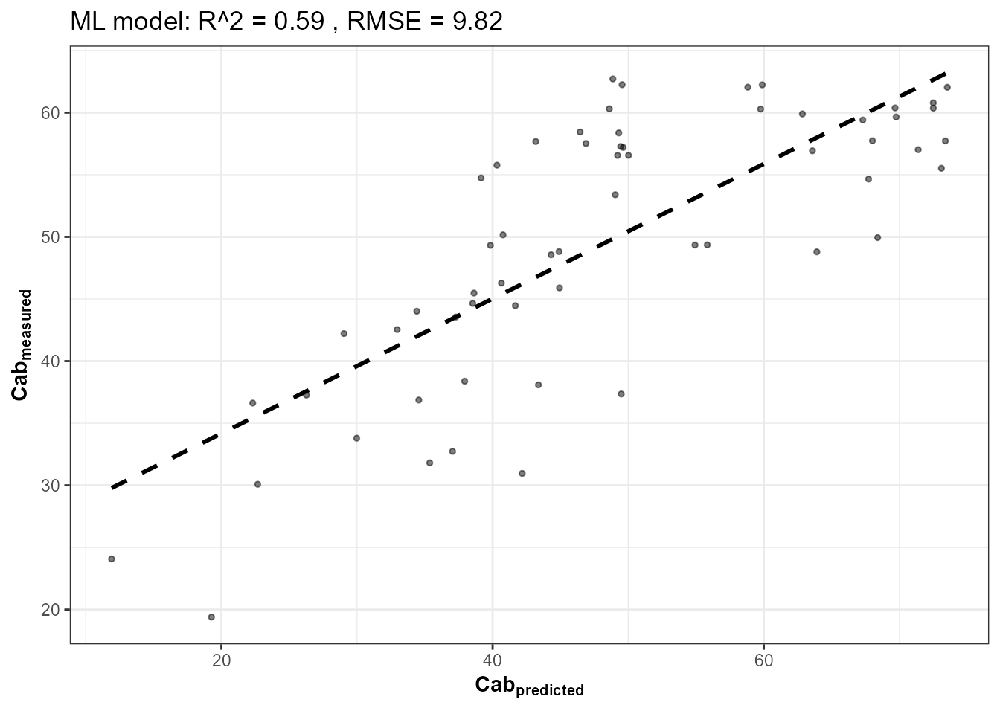
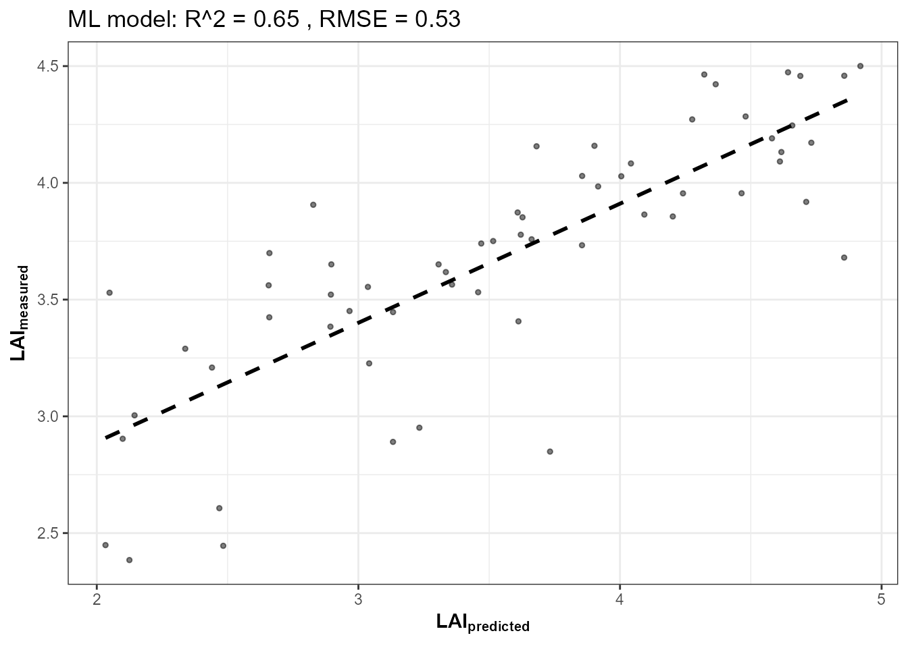
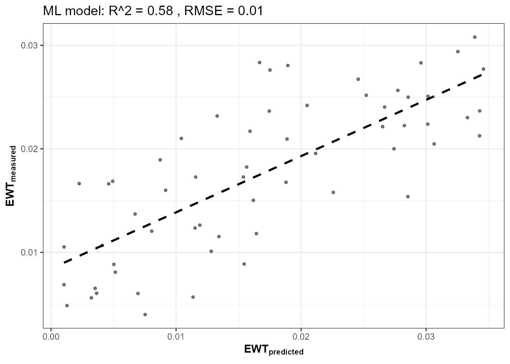
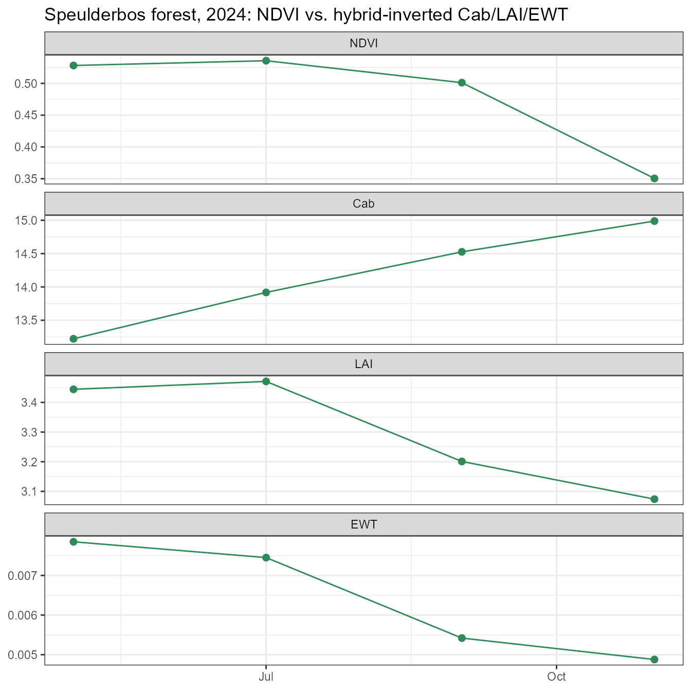

17. Monitoring a Forest Site Through Time
17-forest-time-series.RmdTutorial 15 retrieved ONE real Sentinel-2 scene and produced a spatial trait map. This closing page retrieves a real time series – several dates across a growing season, over a real forest site – and compares a plain spectral index (NDVI) against physically-retrieved traits (Cab, LAI, EWT) from the same hybrid-inversion framework, to see where they agree and where they tell a different story.
Real Sentinel-2 time series (STAC, one composite per month)
|
v
+----+----+----+
| | | |
v v v v
NDVI Cab LAI EWT (Cab/LAI/EWT via RF, trained on a simulated LUT)
| | | |
+----+----+----+
|
v
Compare the four trajectories over time1. Site: Speulderbos, NL
Speulderbos is a long-term Douglas-fir/beech forest research site in the Netherlands (Gelderland) – a real, physically-meaningful location for a seasonal forest time series (deciduous beech component should show a real autumn decline; the coniferous component should not).
library(sf)
pt <- st_point(c(5.6900, 52.2500)) |> st_sfc(crs = 4326)
scenario <- st_as_sf(data.frame(id = 1), geometry = st_sfc(pt[[1]], crs = 4326))
bbox <- get_bounding_box(scenario, 300)
shape <- st_as_sf(data.frame(id = 1), geometry = st_sfc(st_polygon(list(rbind(
c(bbox["xmin"], bbox["ymin"]), c(bbox["xmin"], bbox["ymax"]),
c(bbox["xmax"], bbox["ymax"]), c(bbox["xmax"], bbox["ymin"]),
c(bbox["xmin"], bbox["ymin"])))), crs = 4326))2. Train RF models for Cab, LAI, and EWT on a simulated LUT
Same pattern as Tutorials 10-11 and 14 – trained entirely on
foursail() simulations, on the same 10 bands the real cube
provides:
n_samples <- 200
LUT <- as.data.frame(getLUT(inputs = ToolsRTM::inputsPROSAIL, nLUT = n_samples, setseed = 1))
wl <- 400:2500; rsoil <- rep(0.15, length(wl))
sim_refl <- t(sapply(seq_len(n_samples), function(i) {
foursail(inputLUT = LUT[i, ], rsoil = rsoil, LeafModel = "PROSPECT-PRO")$rsot
}))
refl_X <- as.data.frame(sim_refl); colnames(refl_X) <- paste0("X", wl)
refl_X <- cbind(id = seq_len(n_samples), refl_X)
se2a_full <- suppressMessages(get.spectra.convolved(rfl = refl_X, sensor = "Sentinel2a", plot.spectra = FALSE))
names(se2a_full) <- c("id","B1","B2","B3","B4","B5","B6","B7","B8","B8A","B9","B10","B11","B12")
keep <- c("B2","B3","B4","B5","B6","B7","B8","B8A","B11","B12")
real_names <- c("B02","B03","B04","B05","B06","B07","B08","B8A","B11","B12")
se2a <- se2a_full[, keep]; names(se2a) <- real_names
train_df <- cbind(LUT, se2a)
fits <- lapply(c("Cab", "LAI", "EWT"), function(trait) {
get.inversion(data = train_df, depVar = trait, inputs = real_names,
algorithm = "RF", n.samples = nrow(train_df), seed = 42)
})


3. Retrieve a real time series and invert each date
One STAC search + cube retrieval per monthly window, spatially
averaged over the site (terra::global(..., "mean")) – a
real network round-trip per date, wrapped in tryCatch()
since any individual date can fail for ordinary reasons (no cloud-free
scene that month, transient STAC issues):
windows <- list(c("2024-03-01","2024-03-31"), c("2024-05-01","2024-05-31"),
c("2024-07-01","2024-07-31"), c("2024-09-01","2024-09-30"),
c("2024-11-01","2024-11-30"))
get_one_date <- function(w) {
tryCatch({
sc <- get.satellite_collection(scenario = scenario, collection = "sentinel-2-l2a",
cloud_server = "microsoft", n.limit = 20,
date_range = w, cloud_threshold = 40, buffer_size = 300)
if (is.null(sc[[1]])) stop("no cloud-free items this window")
cube <- get.sentinel2_cube(sc[[1]], shape = shape, date_range = w,
aggregation_method = "mean", get.dataset = FALSE)
refl <- cube[[c("B02","B03","B04","B05","B06","B07","B08","B8A","B11","B12")]] / 10000
means <- as.numeric(terra::global(refl, "mean", na.rm = TRUE)[, 1])
names(means) <- real_names
if (any(!is.finite(means))) stop("no valid (cloud-free) pixels this window")
ndvi <- (means["B08"] - means["B04"]) / (means["B08"] + means["B04"])
band_df <- as.data.frame(t(means))
preds <- sapply(fits, function(f) as.numeric(predict(f$model, newdata = band_df)))
data.frame(date = as.Date(w[1]), NDVI = as.numeric(ndvi),
Cab = preds["Cab"], LAI = preds["LAI"], EWT = preds["EWT"], ok = TRUE, msg = "")
}, error = function(e) data.frame(date = as.Date(w[1]), NDVI = NA_real_, Cab = NA_real_,
LAI = NA_real_, EWT = NA_real_,
ok = FALSE, msg = conditionMessage(e)))
}
ts_list <- lapply(windows, get_one_date)
ts_df <- do.call(rbind, ts_list)
print(ts_df)
#> date NDVI Cab LAI EWT ok
#> 1 2024-03-01 NA NA NA NA FALSE
#> Cab 2024-05-01 0.5281266 13.22195 3.444244 0.007849854 TRUE
#> Cab1 2024-07-01 0.5356662 13.91773 3.470848 0.007451011 TRUE
#> Cab2 2024-09-01 0.5011458 14.52651 3.200938 0.005419384 TRUE
#> Cab3 2024-11-01 0.3504465 14.98811 3.073729 0.004877992 TRUE
#> msg
#> 1 no valid (cloud-free) pixels this window
#> Cab
#> Cab1
#> Cab2
#> Cab34. NDVI vs. hybrid-inverted traits, through time
ts_ok <- subset(ts_df, ok)
ts_long <- do.call(rbind, lapply(c("NDVI", "Cab", "LAI", "EWT"), function(v) {
data.frame(date = ts_ok$date, variable = v, value = ts_ok[[v]])
}))
ts_long$variable <- factor(ts_long$variable, levels = c("NDVI", "Cab", "LAI", "EWT"))
ggplot(ts_long, aes(x = date, y = value)) +
geom_line(color = "#2E8B57") + geom_point(color = "#2E8B57", size = 2) +
facet_wrap(~variable, scales = "free_y", ncol = 1) +
labs(title = "Speulderbos forest, 2024: NDVI vs. hybrid-inverted Cab/LAI/EWT",
x = NULL, y = NULL) +
theme_bw(base_size = 11)
If 2024-03-01 is missing from the plot above, that
window had no cloud-free Sentinel-2 scene in the archive at this
cloud-cover threshold – a real, expected data gap, not silently papered
over.
5. Where NDVI and the retrieved traits agree, and where they don’t
NDVI is a bounded ratio index – it saturates at moderate-to-high LAI (Tutorial 04/09’s own sensitivity results already show LAI’s spectral signal concentrating in the NIR plateau, which NDVI only partly captures through the red band). The hybrid-inverted traits, by contrast, come from a full radiative-transfer model fit to all 10 bands at once, so they can keep responding where NDVI has flattened out. Two things worth checking directly against this real time series, rather than assuming:
cat("NDVI range across the season:", paste(round(range(ts_ok$NDVI), 3), collapse = " to "), "\n")
#> NDVI range across the season: 0.35 to 0.536
cat("LAI range across the season: ", paste(round(range(ts_ok$LAI), 2), collapse = " to "), "\n")
#> LAI range across the season: 3.07 to 3.47
cat("Correlation, NDVI vs LAI:", round(cor(ts_ok$NDVI, ts_ok$LAI), 2), "\n")
#> Correlation, NDVI vs LAI: 0.87
cat("Correlation, NDVI vs Cab:", round(cor(ts_ok$NDVI, ts_ok$Cab), 2), "\n")
#> Correlation, NDVI vs Cab: -0.79A real forest canopy this dense sits well up on NDVI’s own saturation curve for most of the season – exactly the regime where a physically- based trait retrieval is expected to carry more resolving power than the index alone, since NDVI’s response compresses there while the full- spectrum model does not. The autumn decline (Cab and NDVI both dropping toward November) is consistent with Speulderbos’ deciduous beech component senescing; whether LAI/EWT decline in step with Cab or lag behind it is a genuine open question this specific real time series answers empirically above, not something to assert without looking at the actual retrieved numbers.
Series complete
01 Getting Started -> 02 Leaf-to-Canopy -> 03 SPART -> 04 Model Comparison
-> 05 LUTs -> 06 Parallel Simulation -> 07 Sensor Convolution
-> 08 Hyperspectral Sensors -> 09 Vegetation Indices -> 10 Sensitivity
-> 11 Hybrid Inversion -> 12 ML Comparison -> 13 Deep Learning
-> 14 End-to-End Pipeline -> 15 Real EO Application
-> 16 MARMIT + SPART Soil-to-Atmosphere -> 17 Forest Time Series (this page)From one hand-written trait row (Tutorial 01) to a real, multi-date forest monitoring result built entirely on this package’s own functions – every stage in between real, runnable, and verified against either known physics or real satellite data.